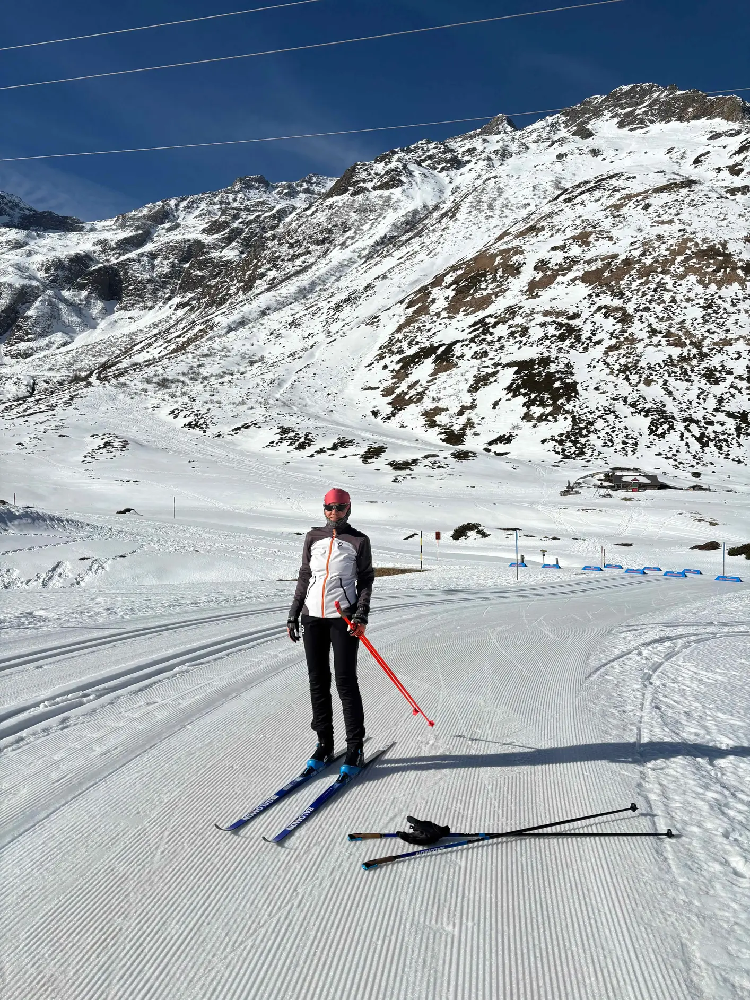
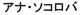

<main class="container about-page">
  <div class="content">
    

    <h1>About</h1>

    <p>My name in Macedonian Cyrillic: Ана Соколова; also in Japanese katakana, thanks to Ichiro Hasuo:<br /></p>

    <p>You can often find Harald and me on the cross-country skiing trails around Salzburg as long as there is snow, and on the rocks near Salzburg and Vienna the rest of the year.</p>

    <p>We love Kalymnos — it is a maximal element in the poset of places that we love :-) and top among beloved holiday places. Other maximal elements for me are of course Vienna and Salzburg, Skopje, Ohrid, Saarbrücken and a few more spots in Saarland, Lovran, and — yes — Eindhoven and Nijmegen. All these are places with dearest people or many nice memories.</p>

    <p>My twin sister Maja is an artist and art teacher.</p>

    <p>My family is spread across five countries and two continents. Sometimes, especially during the pandemic, I miss(ed) them all and my close friends far away.</p>

    <p>I condemn war and destruction. “Live and let live” is the slogan I like most.</p>
  </div>
</main>
